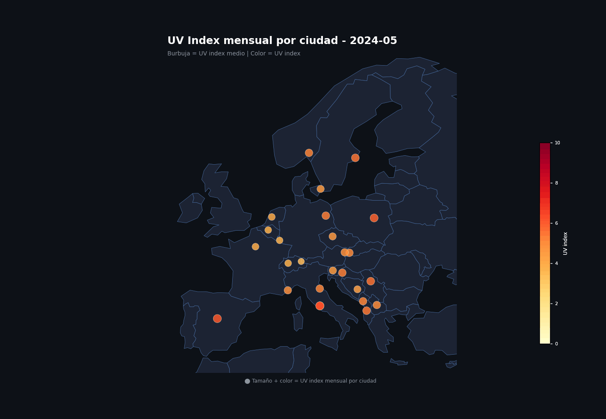
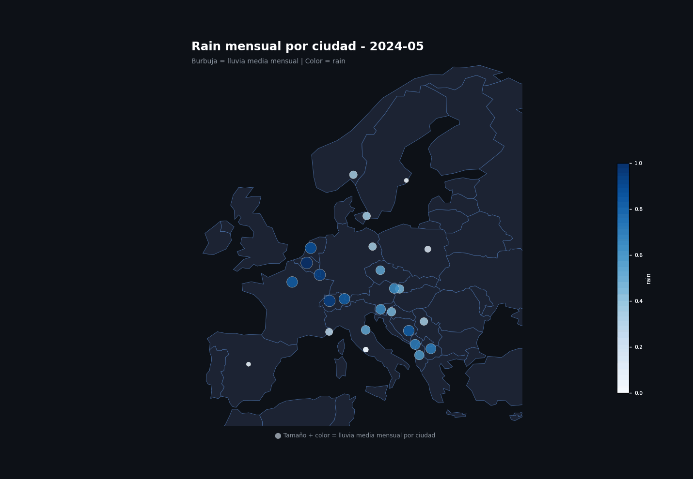
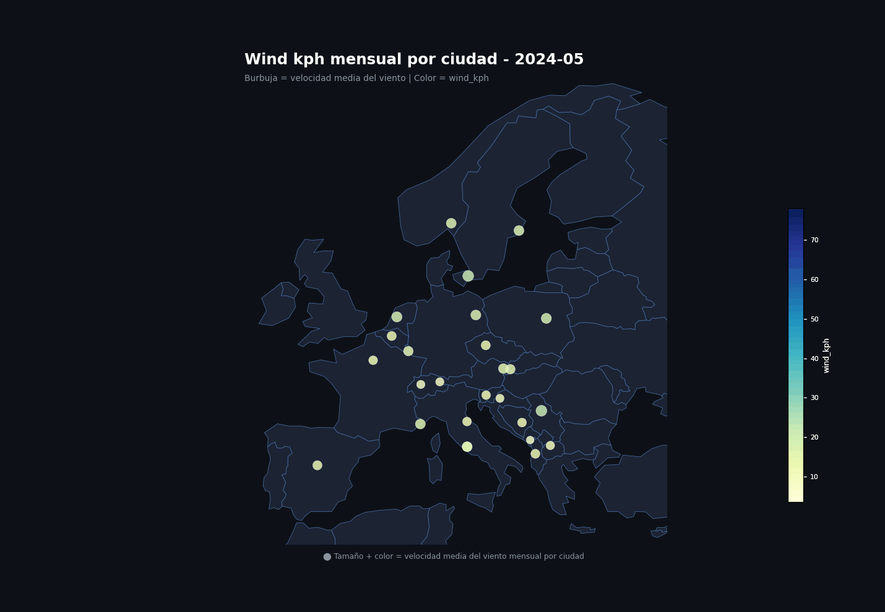

El suministro global está bloqueado
Ante el aumento del consumo y las restricciones en rutas clave como el estrecho de Ormuz (que interrumpen el transporte de hidrocarburos hacia Europa y Asia) la dependencia de combustibles fósiles importados se vuelve más riesgosa. Al mismo tiempo, el cambio climático exige soluciones que reduzcan emisiones: por eso es imprescindible impulsar energías renovables (solar, eólica e hidráulica), redes inteligentes y almacenamiento. En resumen, Europa debe avanzar hacia la autosuficiencia energética basada en fuentes renovables.
EnergyInvest existe para que esa inversión se haga bien: en el lugar correcto, en el momento adecuado, con los datos que respaldan cada decisión.
Contexto geopolítico inédito
Los principales bloques productores de crudo están intervenidos o bloqueados. Europa no puede esperar para desarrollar sus propias fuentes de energía.
Regulación que empuja
El Pacto Verde Europeo, las ZBE y los objetivos climáticos crean una demanda estructural e inevitable de energías limpias en toda la UE.
Datos, no intuición
Nuestras recomendaciones se basan en 26 capitales europeas, datos reales 2024–2026, y análisis multidominio. Invertir bien requiere saber exactamente dónde.
Cinco personas.
Una sola misión.
Somos un equipo especializado en análisis de datos energéticos y estrategia de inversión. Combinamos experiencia en mercados europeos, modelado de datos y consultoría para ayudarte a tomar las mejores decisiones.
¿Tienes una oportunidad en mente?
Hablemos.
Nuestro equipo está disponible para agendar una reunión personalizada y analizar contigo dónde y cómo invertir en el nuevo mapa energético europeo. Sin compromisos, con datos reales.
Solicitar reunión →26 capitales.
Datos reales 2024–2026.
Explora el sector de energía renovable. Cada sección incluye visualizaciones y conclusiones estratégicas basadas en datos reales.
Evaluación basada en índice UV y condiciones de cielo. La animación mensual muestra dónde y cuándo la radiación solar es más intensa a lo largo del año.
Por qué se hizo
Se utiliza para medir la disponibilidad solar real mediante el índice UV, que refleja la radiación ultravioleta incidente. Ayuda a estimar el potencial fotovoltaico efectivo a lo largo del año y a identificar meses con mayor exposición.

Resultados e interpretación
Los meses con más favorabilidad se concentran principalmente en el sur, mientras que en el norte esta tendencia es menos marcada.
Por qué se hizo
El dashboard completa la animación mensual y permite contrastar de forma interactiva el índice UV con las nubes ya que de poco sirve el sol si la mayoría del tiempo está el cielo nublado.

Resultados e interpretación
La visualización interactiva confirma el mismo patrón: en el norte mandan las nubes y las burbujas grandes, mientras que Madrid, Roma y Tirana quedan con burbujas más pequeñas y mejores condiciones para solar.
Conclusión general
Las ciudades del norte concentran las burbujas más grandes y las peores condiciones para solar: Oslo, Copenhagen, Stockholm, Amsterdam, Brussels, Berlin y Warsaw. En cambio, Madrid, Roma y Tirana tienen burbujas más pequeñas y están más al sur, así que allí hay menos nubes y sale más rentable poner el sector solar.
Estimación basada en lluvia y condiciones meteorológicas persistentes. La animación mensual muestra qué ciudades concentran más lluvia y en qué momentos del año.
Por qué se hizo
Se analiza para estimar la disponibilidad de recurso hídrico y detectar qué zonas tienen una base más sólida para una producción hidráulica continua durante el año.

Resultados e interpretación
Las ciudades del noroeste y del entorno atlántico presentan más lluvia y mayor regularidad, mientras que las regiones más secas muestran una ventaja menor para este tipo de inversión.
Por qué se hizo
Se usa la presión atmosférica como referencia porque está relacionada con las precipitaciones: la alta presión se asocia a tiempo estable y la baja presión a nubes y lluvia.

Resultados e interpretación
Sin embargo, en este gráfico no se distinguen diferencias significativas: los patrones son muy constantes entre las ciudades y apenas se aprecian variaciones, tal y como se ve todas las burbujas tiene casi el mimso grosor, con lo cual no nos es tan útil como habíamos pensado que podría sernos.
Conclusión general
La hidráulica tiene más sentido en ciudades y áreas con lluvia recurrente y menor estacionalidad, porque eso sostiene mejor la generación y reduce el riesgo operativo.
Evaluación sobre vientos sostenidos y estabilidad climática. El GIF mensual muestra los cambios de velocidad del viento a lo largo del año.
Por qué se hizo
Se necesita para medir la intensidad del recurso eólico. De momento solo tenemos datos por ciudades, aunque para este caso tendría más sentido analizar zonas concretas, porque los rangos son muy grandes y una ciudad puede ocultar variaciones locales importantes.

Resultados e interpretación
Las zonas costeras, los corredores abiertos y las áreas con menor obstrucción urbana suelen mostrar patrones más sólidos. Por eso, para eólica, la lectura por ciudad sirve como primera aproximación, pero el análisis por zonas sería mucho más preciso.
Conclusión general
Con estos gráficos se puede extraer poca información, ya que el estudio debería hacerse de manera más local. Por ejemplo, puede que el sensor esté situado en la capital, en medio de la ciudad, donde apenas hay viento, pero si te desplazas a una montaña cercana o a las afueras, las condiciones cambian completamente.
Por eso es muy importante instalar más sensores en diferentes ubicaciones y, una vez se disponga de más datos, estudiar también la dirección del viento. Esto permitiría optimizar no solo dónde colocar los molinos de viento, sino también la orientación y posición más adecuada de cada uno.